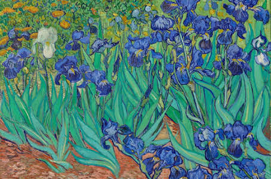

About
Vincent Willem van Gogh (Dutch: [ˈvɪnsənt ˈʋɪləm vɑŋ ˈɣɔx] (About this
soundlisten);[note 1] 30 March 1853 – 29 July 1890) was a Dutch
post-impressionist painter who posthumously became one of the most
famous and influential figures in the history of Western art. In a decade,
he created about 2,100 artworks, including around 860 oil paintings, most of
which date from the last two years of his life. They include landscapes,
still lifes, portraits and self-portraits, and are characterised by bold
colours and dramatic, impulsive and expressive brushwork that contributed to
the foundations of modern art. He was not commercially successful, and his
suicide at 37 came after years of mental illness, depression and poverty.
Born into an upper-middle-class family, Van Gogh drew as a child and was
serious, quiet, and thoughtful. As a young man he worked as an art dealer,
often travelling, but became depressed after he was transferred to London.
He turned to religion and spent time as a Protestant missionary in southern
Belgium. He drifted in ill health and solitude before taking up painting in
1881, having moved back home with his parents. His younger brother Theo
supported him financially, and the two kept a long correspondence by letter.
His early works, mostly still lifes and depictions of peasant labourers,
contain few signs of the vivid colour that distinguished his later work. In
1886, he moved to Paris, where he met members of the avant-garde, including
Émile Bernard and Paul Gauguin, who were reacting against the Impressionist
sensibility. As his work developed he created a new approach to still lifes
and local landscapes. His paintings grew brighter in colour as he developed a
style that became fully realised during his stay in Arles in the south of
France in 1888. During this period he broadened his subject matter to include
series of olive trees, wheat fields and sunflowers.
Van's Art
The Starry Night

The Starry Night
The Starry Night Painting by Vincent van Gogh The Starry Night is an oil on canvas painting by Dutch Post-Impressionist painter Vincent van Gogh. Painted in June 1889, it depicts the view from the east-facing window of his asylum room at Saint-Rémy-de-Provence, just before sunrise, with the addition of an imaginary village.
Irises
Irises
Irises Painting by Vincent van Gogh The Starry Night is an oil on canvas painting by Dutch Post-Impressionist painter Vincent van Gogh. Painted in June 1889, it depicts the view from the east-facing window of his asylum room at Saint-Rémy-de-Provence, just before sunrise, with the addition of an imaginary village.
Wheatfield with Crows

Wheatfield with Crows
Wheatfield with Crows Painting by Vincent van Gogh The Starry Night is an oil on canvas painting by Dutch Post-Impressionist painter Vincent van Gogh. Painted in June 1889, it depicts the view from the east-facing window of his asylum room at Saint-Rémy-de-Provence, just before sunrise, with the addition of an imaginary village.